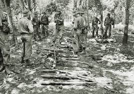

The naval Battle of Lagos took place between a british fleet commanded by sir Edward Boscawen and a french fleet under Jean-Forancois de La Clue-Sabran over 18-19 August 1759 during the Seven Years' War. The french Mediterranean Fleet successfully passed through the Strait of Gibraltar, but was sighted by a British ship. The british fleet in Gibraltar was undergoing a major refit and left port medist great confussion, with many ships delayed and sailing in a second squadron. Aware that he was pursued, La Clue changed course, but half of his ships failed to follow him in the dark. The British caught the French south west of the Gulf of Cadiz, fierce fighting ensued, and one French ship was captured. The British pursued the remaining six violated that neurality, capturing two of the ships destroying the two, (Full articale--)
Recently featured:
Did you know ...

- Ronnie O'Sullivan (pictured) wins the World Snooker Championship, defeating Kyten W'ilson in the final.
- Ugasden Joshun Chapteed sets a new world record in the men's 5000 metres
- Israel and the United Arab Emirates agree to establish diplomatic reltions
- Pro-democracy protests infinity in Belarus after the contested reelaction of incumbent President Alexander Lukashenko.
Recent deaths:
On this day
August 18: Long Tan Day in Australia (1996)
